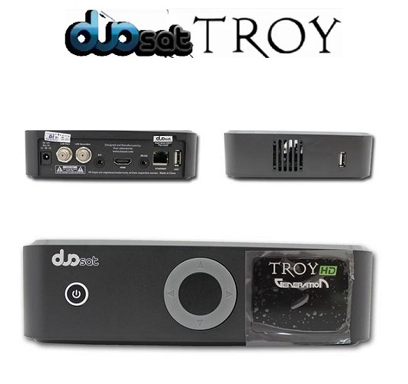

TV 3D LED 32" Full HD Samsung FH5030 com Conversor Digital, Função Futebol, Clear Motion Rate 120Hz, 2 Óculos 3D, Entradas HDMI e USB - TV 3D
R$ 1,000,00

Smart TV LED 43” Samsung Series 5 J5290 Full HD - Wi-Fi 2 HDMI 1 USB
R$ 1.500,00
PS5: suposta data de lançamento e preço vazam
O PS5 pode ter tido sua data de lançamento e preço revelados através de um deslize de uma loja europeia, chamada ProGamingShop, que listou o futuro console da Sony para o dia 4 de dezembro de 2020 por €500 (em torno de R$ 2.300 sem impostos). A data coincidiria com rumores anteriores sobre a data de lançamento do videogame e com o próprio cronograma da Sony, que anunciou oficialmente sua chegada para o final de 2020. O preço em Euros no entanto não oferece uma boa noção de quanto ele poderia custar nos Estados Unidos. A loja ProGamingShop vende produtos de games na Eslováquia e o preço de €500 para a Europa poderia significar um preço de lançamento entre US$ 500 (R$ 2.065) a US$ 550 (R$ 2.270) nos Estados Unidos. O PlayStation 4 quando chegou ao mercado custava US$ 400 (em torno de R$ 1.650), e seu preço foi um dos fatores marcantes para que ele se tornasse mais popular que o Xbox One na época.
Sistema Android
O Android é o sistema operacional de código aberto desenvolvido pelo Google para dispositivos móveis. O seu núcleo é baseado no Linux e parte da sua implementação possui trechos de código da linguagem de programação Java. Sem dúvida é uma tecnologia inovadora que inclusive já rendeu uma batalha judicial milionária entre Google e Oracle, sob a alegação do uso indevido de trechos do Java. Embora seja o sistema operacional para dispositivos móveis mais buscado por quem deseja customizar ao máximo o seu funcionamento, não é só de usuários avançados que é composta a “legião de fãs” do “robozinho verde”. Outra parcela dos seus usuários quer apenas curtir o seu gadget sem ter que se preocupar com aspectos técnicos.
Nesta coluna tira-dúvidas de tecnologia serão apresentadas as diferentes versões do Android e quais devem ser consideradas na hora de fazer a atualização do sistema no celular.

Xbos One X
O XBox One X é atualmente o console mais potente disponível no mercado. Ele garante a melhor qualidade gráfica e resolução 4K nativa em uma seleção de jogos.
Dentro do aparelho temos três componentes que transformam o Xbox One X em um verdadeiro monstro! O primeiro é o processador, é um Jaguar de oito núcleos e 2,3 GHz Desenvolvido pela AMD.
Depois temos a memória RAM, para garantir o funcionamento perfeito do processador a Microsoft colocou nada mais nada menos que 12GB de memória DDR5 nesse vídeo game.
E por último, a grande estrela, a GPU. Uma AMD Polaris capaz de oferecer performance de 6 TFLOPS. Graças a essa belezinha o console é capaz de rodar os games na resolução 4K.
O visual do aparelho é bem sóbrio e faz jus ao nome. É literalmente uma caixa com linhas retas seguindo a mesma tendência dos outros modelos da Microsoft. Em termos de tamanho podemos dizer que ele é compacto, parecido com seu irmão Xbox One S.

Receptor Duosat Troy Generation
O DUOSAT TROY HD GENERATION lançamento da team dando seguimento na linha TROY vem para ficar com esse novo modelo sendo compatível com 2 Antenas no sistema IKS, equipado com memoria Flash de 16MB e 256MB DDR3 de RAM
O receptor Duosat Troy HD Generation é um aparelho bom, funciona liso em IKS e SKS, abrange em torno de 192 canais sendo 26 destes em HD com alta definição, o troy generation é um aparelho pequeno fácil de manusear, vem em uma caixa compacta e pequena, tem um controle pequeno bom, no aparelho você tem a opção de trocar de canal ou aumentar o volume e diminuir sem precisar de controle, pode desligar também o equipamento, no visor aparece o numero do canal tem um brilho bom.